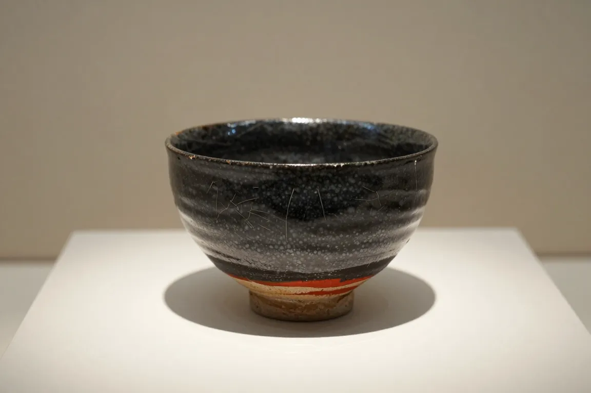

Чайные чаши ручной лепки низкого обжига, которые Тёдзиро делал в Киото для мастера чая Сэн-но Рикю. Гончар достаёт каждую чашу из горячей печи, а глазурь чёрная или красная.

Главная идея
Чайной чаше не нужно быть выточенной, круглой или яркой: слепленная вручную, чуть неровная и быстро обожжённая, она может успокоить ум и ничего не просить у глаза.
Принципы дизайна
Лепите чашу вручную из жгута или защипанного шара глины; не пользуйтесь кругом.
Срезайте форму бамбуковым ножом, пока стенка не станет 8–12 мм и не ляжет в ладонь.
Делайте чашу низкой и тяжёлой, с плоским или чуть вогнутым дном.
Покрывайте черепок одной свинцовой глазурью, чёрной или красной, одного цвета.
Обжигайте каждую чашу отдельно в небольшой печи при 800–1000 °C и вынимайте горячей.
Оставляйте след руки: вмятину, срез шпателем или лёгкий наклон.
Делайте чёрную чашу для мастера чая, а красную для гостя.
Держите чашу простой, чтобы зрелищем были чай и комната.
Антипаттерны
Точно круглая форма, какую делает круг
Яркий нарисованный или печатный узор
Тонкая лёгкая твёрдая стенка, звенящая при постукивании
Глянцевая высокотемпературная глазурь, выглядящая мокрой и твёрдой